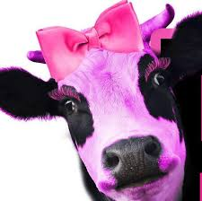

Article Heading
Section Heading
to jest jakiś losowy tekst w sectionie no zyciedasfaW marcu zeszłego roku kilkoro pracowników CIWF France pojechało do Normandii, aby odwiedzić jedno z tamtejszych gospodarstw. Był to czas, kiedy krowy wychodziły po raz pierwszy na pastwiska po zimowej przerwie. Ich oczom ukazał się niezwykły widok krów, szczęśliwych, że znowu mogą biegać na zewnątrz i pogryzać świeżą trawę. Krowom robi to różnicę! Niestety, nie wszystkie krowy mają taką możliwość. Większość krów w Polsce i w Europie nigdy nie ma dostępu do pastwiska. Obecnie nie istnieje europejskie prawodawstwo, które zapewniałoby ochronę krów, pomimo tego, że na terenie UE jest ich hodowanych rocznie aż 25 milionów. Dlatego rozpoczęliśmy kampanię mającą na celu podniesienie świadomości obywateli oraz wywarcie wpływu na Komisję Europejską i doprowadzenie do stworzenia odpowiedniego prawa.